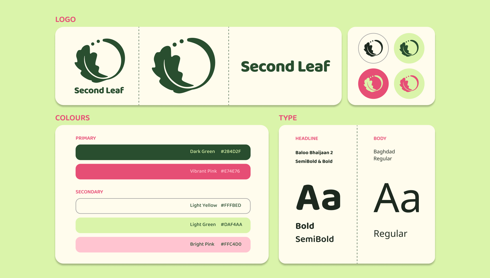
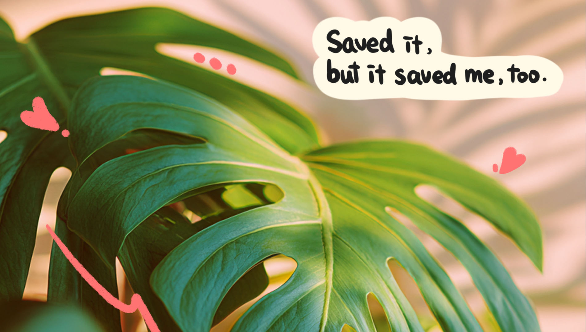
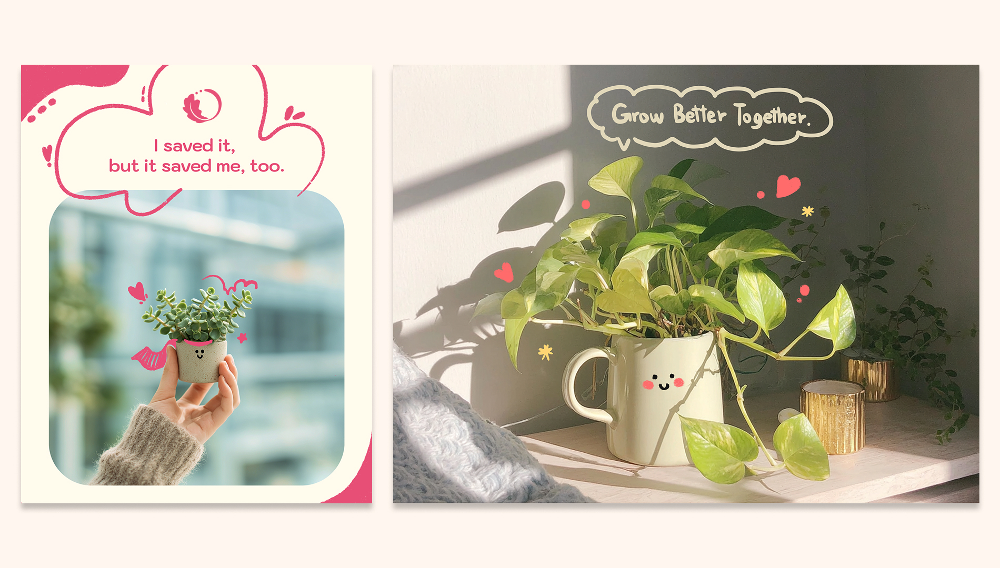
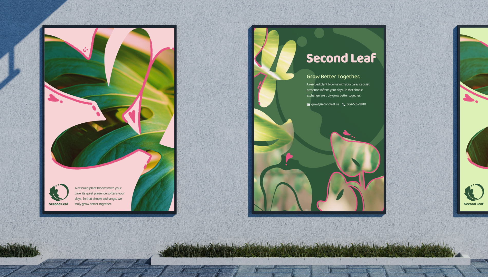
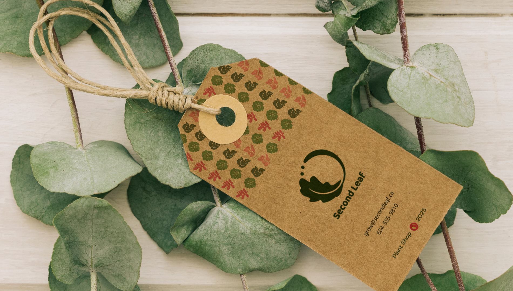
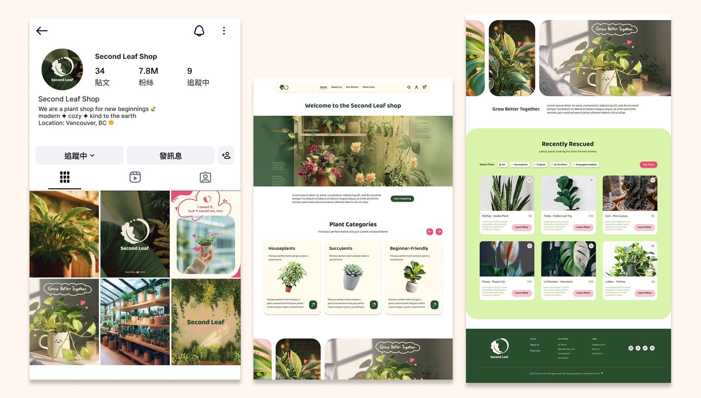

My Role
Brand Designer & Strategist
Team
Independent project
Timeline
6 weeks
Tools
Figma
Adobe Illustrator
Adobe Photoshop
Procreate
Project Overview
Second Leaf is a branding project for a plant shop specializing in rescued, surplus, and repurposed plants. The project includes the development of the brand strategy, visual identity, packaging, social media assets, and a responsive website homepage to create a cohesive brand experience.
Brand Mission
Every year, nurseries and retailers throw away perfectly healthy plants, not because they’re bad, but because of overstock, seasonal timing, or small cosmetic flaws. Our mission is to reduce that waste, give these plants a second chance, and show people how plant care can actually bring calm, joy, and routine into their everyday lives.
Audience
Designed for new plant parents and young adults looking for meaningful, low-pressure ways to care for plants. Rather than rare or expensive plants, they value accessible plants with stories. For those who care about sustainability, rescuing plants also provides a purposeful way to give them a second life.

Visual Identity
The logo is a combination of a leaf with a subtle smile, symbolizing renewal and happiness that plants can bring to people. For the colours, green reflects nature and growth, while pink brings in warmth and a sense of love to the brand.


Throughout the branding images and visuals, I wanted to convey a welcoming and sweet feeling that emphasizes the connection between people and their plants, as well as the stories and warmth they bring. I added hand-drawn elements to make the visuals feel more lively and authentic.


I drew four main graphic elements that appear throughout the brand, either using the brand colours or as cut-out designs for posters. They represent imperfect leaf shapes, adding a playful and organic feel.
